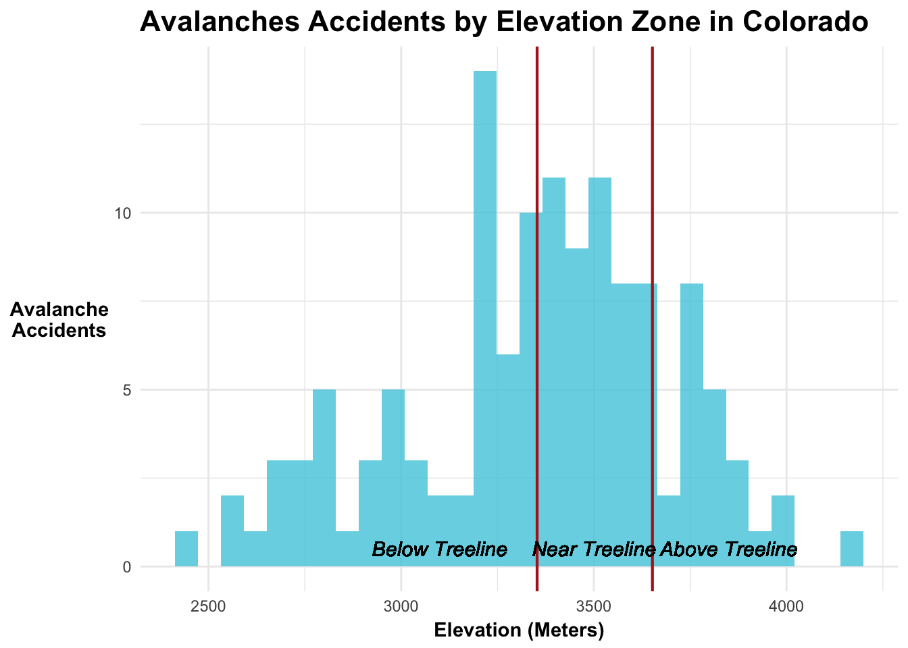
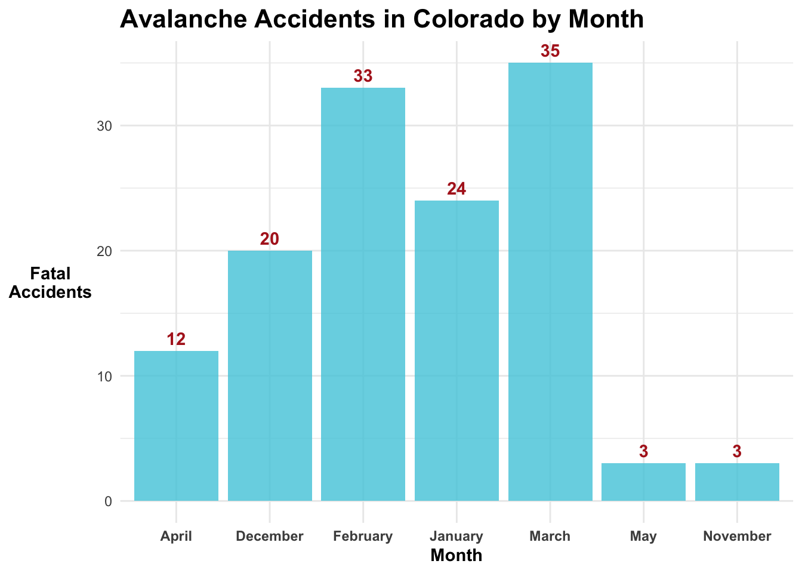

Exploring the Effect of Elevation & Season on Avalanche Accidents
Author
Nicole Pepper
Overview:
In this assignment, I am interested in the relationship between month and elevation on avalanche accidents in Colorado.
Null Hypothesis (H₀): There is no interaction between elevation zones and months in determining avalanche fatality rates. Specifically, the avalanche fatality rates do not differ between elevation zones across months.
This phrasing highlights the interaction you’re testing, clarifies the levels of elevation, and connects them explicitly to the variable of time (months). - Alternative Hypothesis: Avalanche fatality rates differ by elevation zone and month # 1. Set up workspace
── Attaching core tidyverse packages ──────────────────────── tidyverse 2.0.0 ──
✔ dplyr 1.1.4 ✔ readr 2.1.5
✔ forcats 1.0.0 ✔ stringr 1.5.1
✔ ggplot2 3.5.1 ✔ tibble 3.2.1
✔ lubridate 1.9.3 ✔ tidyr 1.3.1
✔ purrr 1.0.2
── Conflicts ────────────────────────────────────────── tidyverse_conflicts() ──
✖ dplyr::filter() masks stats::filter()
✖ dplyr::lag() masks stats::lag()
ℹ Use the conflicted package (<http://conflicted.r-lib.org/>) to force all conflicts to become errors
library(ggplot2)library(here)
here() starts at /Users/nicolepepper/Documents/MEDS/eds-222/eds222-homeworks/eds-222-final-project/co-avalanche-accidents
library(knitr)library(kableExtra)
Attaching package: 'kableExtra'
The following object is masked from 'package:dplyr':
group_rows
library(terra)
terra 1.7.78
Attaching package: 'terra'
The following object is masked from 'package:knitr':
spin
The following object is masked from 'package:tidyr':
extract
library(sf)
Linking to GEOS 3.11.0, GDAL 3.5.3, PROJ 9.1.0; sf_use_s2() is TRUE
library(elevatr)
elevatr v0.99.0 NOTE: Version 0.99.0 of 'elevatr' uses 'sf' and 'terra'. Use
of the 'sp', 'raster', and underlying 'rgdal' packages by 'elevatr' is being
deprecated; however, get_elev_raster continues to return a RasterLayer. This
will be dropped in future versions, so please plan accordingly.
library(hexbin)
2. Read in Project Data
# ---- Read in data ----av_accidents <-read_csv(here::here("data","avalanche_accidents.csv"))
Rows: 981 Columns: 16
── Column specification ────────────────────────────────────────────────────────
Delimiter: ","
chr (10): Location, Trigger, Setting, State, lat, lon, PrimaryActivity, Trav...
dbl (6): AvyYear, YYYY, MM, DD, D Size, Killed
ℹ Use `spec()` to retrieve the full column specification for this data.
ℹ Specify the column types or set `show_col_types = FALSE` to quiet this message.
3. Prepare Data
# ---- Prepare av_accidents data ----# Clean lat and lon columns by removing NAs, 0, and #REF valuesav_accidents <- av_accidents %>%drop_na(lat, lon) %>%# Drop NAs in lat and lon columnsmutate(across(c(lat, lon), as.character)) %>%# Ensure columns are characters for filteringfilter(lat !="0", lon !="0", lat !="#REF!", lon !="#REF!") %>%# Remove values that equal 0 or #REF!mutate(across(c(lat, lon), as.numeric)) # Convert back to numeric# Convert avalanche accidents to spatial objectav_points <- sf::st_as_sf(av_accidents, coords =c("lon", "lat"), crs =4326)
# Convert the result back to a data frame by replacing av_accidentsav_accidents <-as.data.frame(av_points)# ---- Clean and remove unwanted elevation values ---- av_accidents <- av_accidents %>%filter(elevation !=0, elevation !=-10000) # Add elevation group columnav_accidents <- av_accidents %>%mutate(elevation_group =case_when( elevation <3352.8~"Below Treeline", elevation >=3352.8& elevation <=3652~"Near Treeline", elevation >3652~"Above Treeline" ))
ggplot()

# ---- Prepare month data ----# Define list of Month Names for labelsmonth_names <-c("1"="January","2"="February","3"="March","4"="April","5"="May","6"="June","7"="July","9"="September","10"="October","11"="November","12"="December")# Convert MM to a re-ordered factor representing the winter months sequenceav_accidents$MM <-factor(av_accidents$MM,levels =c(9, 10, 11, 12, 1, 2, 3, 4, 5, 6, 7, 8),ordered =TRUE)# Map MM column values to their corresponding namesav_accidents$month_names <- month_names[as.character(av_accidents$MM)]# Filter for Coloradoco_av_accidents <- av_accidents %>%filter(State =="CO") %>%arrange(MM)
4. Visualize preliminary Data
Visualize accidents by elevation
# ---- Plot accidents by elevation ----ggplot(data = co_av_accidents) +geom_histogram(aes(x = elevation),fill ="cornflowerblue",alpha =0.8) +labs(title ="CO Avalanches Accidents by Elevation")
`stat_bin()` using `bins = 30`. Pick better value with `binwidth`.
# ---- Plot accidents by elevation group ----ggplot(data = co_av_accidents) +geom_histogram(aes(x = elevation),fill ="#4ECBDE",alpha =0.8) +geom_vline(xintercept =c(3352.8, 3652), color ="firebrick", size =0.75, linetype ="solid") +theme_minimal() +theme(plot.title =element_text(face ="bold", size =16),axis.title.x =element_text(angle =0,vjust =0.5,face ="bold"),axis.title.y =element_text(angle =0,vjust =0.5,face ="bold")) +labs(title ="Avalanches Accidents by Elevation Zone in Colorado",x ="Elevation (Meters)",y ="Avalanche\nAccidents") +geom_text(aes(x =3100, y = .5), label ="Below Treeline", size =4, fontface ="italic") +geom_text(aes(x =3500, y = .5), label ="Near Treeline", size =4, fontface ="italic") +geom_text(aes(x =3850, y = .5), label ="Above Treeline", size =4, fontface ="italic")
Warning: Using `size` aesthetic for lines was deprecated in ggplot2 3.4.0.
ℹ Please use `linewidth` instead.
Warning in geom_text(aes(x = 3100, y = 0.5), label = "Below Treeline", size = 4, : All aesthetics have length 1, but the data has 130 rows.
ℹ Please consider using `annotate()` or provide this layer with data containing
a single row.
Warning in geom_text(aes(x = 3500, y = 0.5), label = "Near Treeline", size = 4, : All aesthetics have length 1, but the data has 130 rows.
ℹ Please consider using `annotate()` or provide this layer with data containing
a single row.
Warning in geom_text(aes(x = 3850, y = 0.5), label = "Above Treeline", size = 4, : All aesthetics have length 1, but the data has 130 rows.
ℹ Please consider using `annotate()` or provide this layer with data containing
a single row.
`stat_bin()` using `bins = 30`. Pick better value with `binwidth`.
Warning: The dot-dot notation (`..count..`) was deprecated in ggplot2 3.4.0.
ℹ Please use `after_stat(count)` instead.

—- Randomization test for month —-
Fit a logistic model:
How does month and elevation impact the probability of a fatal avalanche accident?
When they put out their reports they have a risk index for below, at, and above treeline.
Avalanche accidents ~ elevation + season + elevation:season
# Practice# Aggregate data by Month and elevation groupco_av_accidents_agg <- co_av_accidents %>%group_by(month_names, elevation_group) %>%summarise(accidents =n(), .groups ="drop") %>%arrange(month_names, elevation_group) # Optional: arrange for better viewing# Fit the avalanche accident modelav_accident_glm <-glm(accidents ~ elevation_group + month_names + elevation_group:month_names, family =poisson(link ="log"), data = co_av_accidents_agg)summary(av_accident_glm)
Call:
glm(formula = accidents ~ elevation_group + month_names + elevation_group:month_names,
family = poisson(link = "log"), data = co_av_accidents_agg)
Coefficients: (2 not defined because of singularities)
Estimate Std. Error z value
(Intercept) 6.931e-01 7.071e-01 0.980
elevation_groupBelow Treeline 4.055e-01 9.129e-01 0.444
elevation_groupNear Treeline 1.253e+00 8.018e-01 1.562
month_namesDecember 4.055e-01 9.129e-01 0.444
month_namesFebruary 9.163e-01 8.367e-01 1.095
month_namesJanuary 9.163e-01 8.367e-01 1.095
month_namesMarch 1.386e+00 7.906e-01 1.754
month_namesMay 6.641e-16 1.000e+00 0.000
month_namesNovember -1.253e+00 8.018e-01 -1.562
elevation_groupBelow Treeline:month_namesDecember 6.931e-01 1.130e+00 0.613
elevation_groupNear Treeline:month_namesDecember -2.719e-01 1.049e+00 -0.259
elevation_groupBelow Treeline:month_namesFebruary 8.755e-01 1.043e+00 0.839
elevation_groupNear Treeline:month_namesFebruary -5.596e-01 9.710e-01 -0.576
elevation_groupBelow Treeline:month_namesJanuary 2.877e-01 1.065e+00 0.270
elevation_groupNear Treeline:month_namesJanuary -6.650e-01 9.767e-01 -0.681
elevation_groupBelow Treeline:month_namesMarch 2.877e-01 1.010e+00 0.285
elevation_groupNear Treeline:month_namesMarch -9.343e-01 9.267e-01 -1.008
elevation_groupBelow Treeline:month_namesMay NA NA NA
elevation_groupNear Treeline:month_namesMay -1.946e+00 1.464e+00 -1.329
elevation_groupBelow Treeline:month_namesNovember 1.542e-01 1.406e+00 0.110
elevation_groupNear Treeline:month_namesNovember NA NA NA
Pr(>|z|)
(Intercept) 0.3270
elevation_groupBelow Treeline 0.6569
elevation_groupNear Treeline 0.1182
month_namesDecember 0.6569
month_namesFebruary 0.2734
month_namesJanuary 0.2734
month_namesMarch 0.0795 .
month_namesMay 1.0000
month_namesNovember 0.1182
elevation_groupBelow Treeline:month_namesDecember 0.5397
elevation_groupNear Treeline:month_namesDecember 0.7955
elevation_groupBelow Treeline:month_namesFebruary 0.4015
elevation_groupNear Treeline:month_namesFebruary 0.5644
elevation_groupBelow Treeline:month_namesJanuary 0.7870
elevation_groupNear Treeline:month_namesJanuary 0.4960
elevation_groupBelow Treeline:month_namesMarch 0.7758
elevation_groupNear Treeline:month_namesMarch 0.3134
elevation_groupBelow Treeline:month_namesMay NA
elevation_groupNear Treeline:month_namesMay 0.1837
elevation_groupBelow Treeline:month_namesNovember 0.9127
elevation_groupNear Treeline:month_namesNovember NA
---
Signif. codes: 0 '***' 0.001 '**' 0.01 '*' 0.05 '.' 0.1 ' ' 1
(Dispersion parameter for poisson family taken to be 1)
Null deviance: 6.4203e+01 on 18 degrees of freedom
Residual deviance: -3.5527e-15 on 0 degrees of freedom
AIC: 104.5
Number of Fisher Scoring iterations: 3
Poisson(link = “log”): is the standard family for modeling count data, which assumes that the response variable follows a Poisson distribution with a mean that is a function of the predictors. The log link is commonly used because it ensures the predicted count remains positive.
Residuals after 4000 m are very negative, likely because not as many people recreate above that elevation.
Examine the p-values for elevation, season, & elevation:season
Visualize model results
# Plot the predicted avalanche accidents by elevation and season
Optional: CAIC wants to focus their efforts on avalanche risk education and outreach. Which elevation/zone months should they focus on incidents of on 20% fatalities…